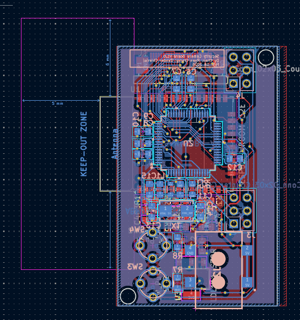

EE 326 - Group 12 - Winter 2026
This is our home automation system built using SAM4S8B, ESP32 and a OV2640 CAM. Currently it supports live webcam streaming over WiFi using WebSockets.

Hardware: ESP32(Wifi Server Host), SAM4S8B(Control System) OV2640(camera)
Built by Du Chen, Ryan Chung and Zander Chierici for EE 326 at Northwestern University.